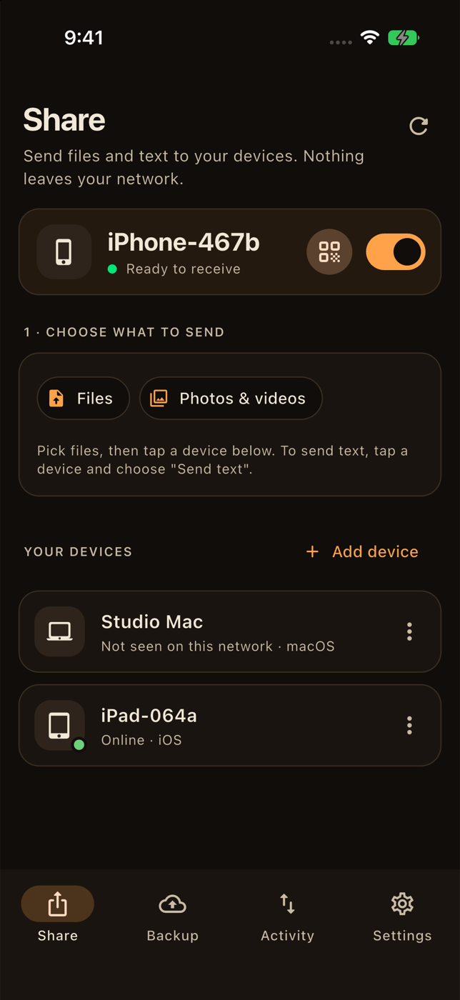
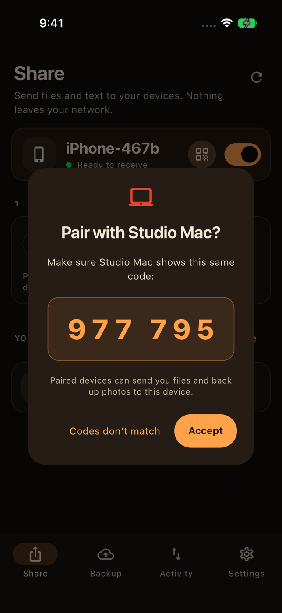
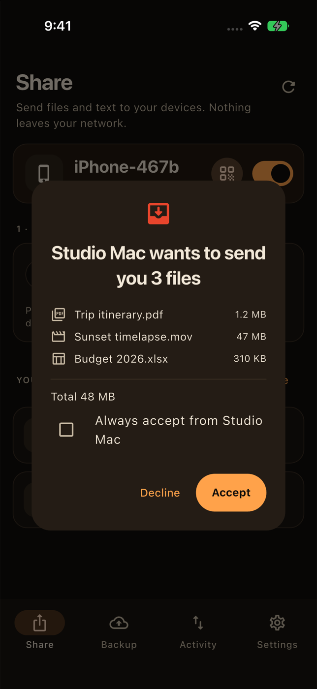
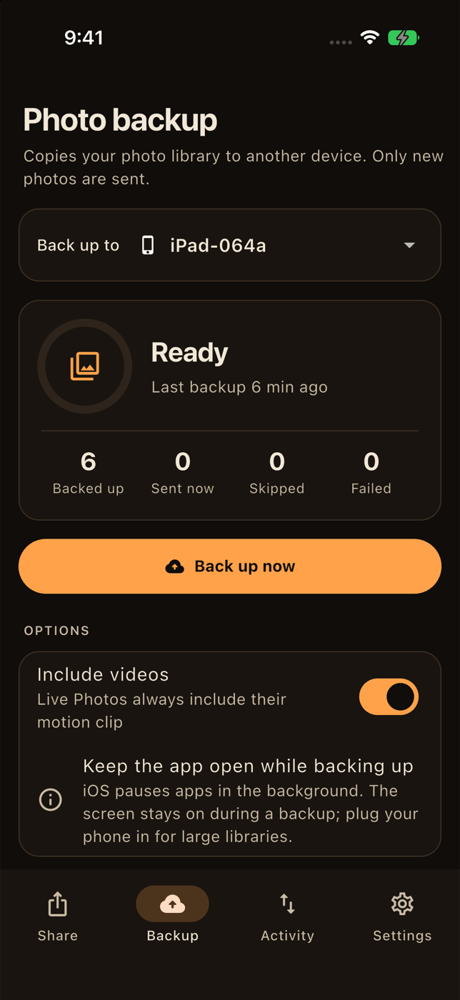
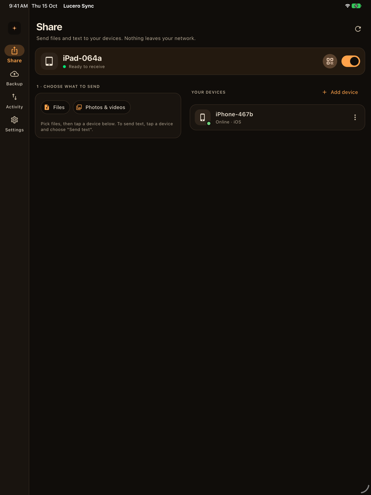

Share anything
Send files of any size, or a quick link or note, to any of your devices. They get a preview of what's coming and choose whether to accept.
Send files between your phones and computers, and back up your photo library, directly over Wi-Fi. Encrypted, with no cloud, no account and no monthly bill.
Send files of any size, or a quick link or note, to any of your devices. They get a preview of what's coming and choose whether to accept.
Back up an iPhone, Android or Mac library to another device. Originals arrive untouched (HEIC, RAW, video and Live Photo pairs), and only new photos are sent.
Every device has its own key. Connections use TLS 1.3, locked to the exact device you paired with, so nothing else on the network can listen in or pretend to be it.
If the Wi-Fi drops or the app closes, the next attempt continues from the exact byte it reached, even halfway through a 4 GB video. Every file is checked before it's saved.
Tap a nearby device and check that both screens show the same six digits, or scan a one-time QR code. Once paired, both devices can send to each other.
iPhone, iPad, Android, Mac, Windows and Linux. On a computer, drag files onto the window and choose where received files and backups are saved.





Install Lucero Sync on two devices on the same Wi-Fi. They find each other automatically.
Tap the other device and check that both screens show the same code, or scan its QR code. That's the only setup.
Pick files and tap a device, or choose where your photo library backs up and tap Back up now.
We built a sharing app that can't see your files, because they never come near us.
Both screens show a six-digit code built with a commitment protocol (the method behind Bluetooth's numeric comparison). Someone intercepting the connection can't make the codes match, and you confirm on both devices.
After pairing, each device only talks to the exact certificate it saw. A spoofed name or address on your network gets nowhere, and a device whose identity changes is flagged rather than trusted.
There are no accounts, servers or relays. Your files go directly from one of your devices to another on your own network.
There's no catch. It's an MIT-licensed open-source project with no servers to pay for, so there's nothing to charge for. If you'd like to give something back, star the repo or contribute.
Any combination of iPhone, iPad, Android, Mac, Windows and Linux. Every device can send and receive files and text. Photo library backup can run from an iPhone, Android or Mac to any of them, so a Windows PC or Linux box makes a great backup destination.
Yes. Since v0.2, every connection uses TLS 1.3 pinned to the certificate of the device you paired with, and every file is verified with SHA-256 before it's saved. The security policy lists exactly what it protects against.
App Store distribution needs a paid developer account, and Play Store policy restricts the "all files access" permission that lets backups land in your gallery. Android installs from an APK. iPhones use AltStore, SideStore or a free Apple ID build. Computers download a zip. The guide walks through each.
Yes, for now. iOS doesn't let apps run long uploads in the background, so keep Lucero Sync open and the phone plugged in for big backups; the app keeps the screen awake. Computers can simply leave it running.
Some networks block discovery (guest Wi-Fi, "client isolation", VPNs, Windows "Public" networks). You can always pair with a QR code or by entering the other device's IP address. Settings › Connection help shows both addresses and fixes for each platform.
Yes, by design. If a backed-up file is missing from the destination folder, the next backup restores it. Photos you delete on your phone stay in the backup.
Free and open source on every platform. Install it on at least two devices to get started.